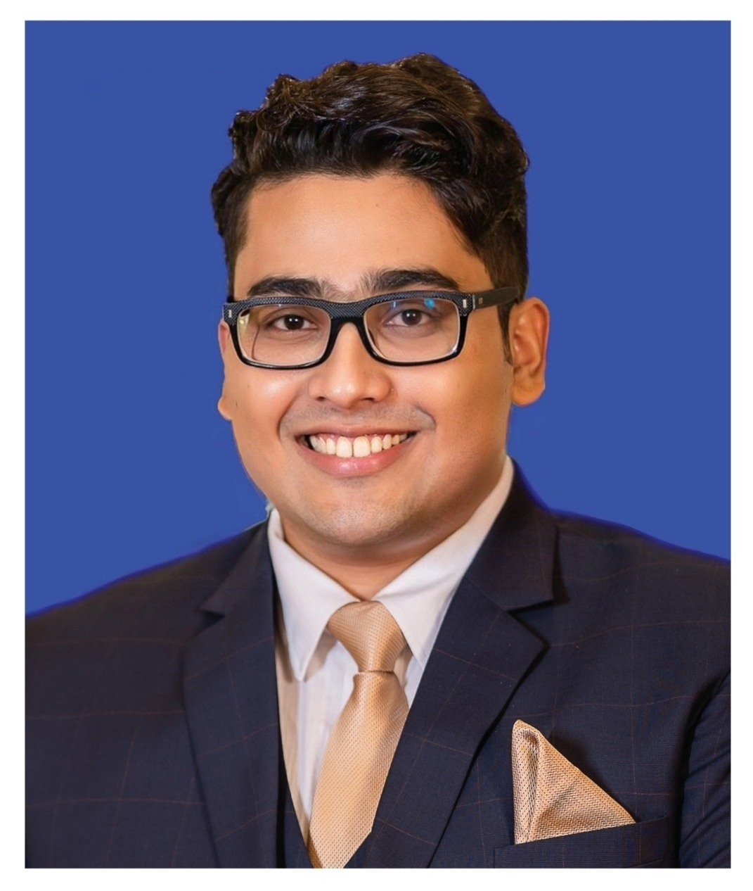

About Me

Hi, I'm Fayek. Currently, I serve as an Assistant Manager (Technical Lead)
at Ernst & Young. However, I have discovered a new calling: applying AI to save lives, not just optimize business processes.
After five years building enterprise systems, I witnessed Dhaka's 2023 dengue outbreak claim over
1,600 lives. Clinics ran out of diagnostic supplies. Patients went untreated. I
realized I needed to use my engineering skills for something more critical.
So, alongside my corporate responsibilities, I dedicated myself to computer vision. I built
PlateletVision—a dengue diagnostic system achieving 96.56% detection
accuracy. I validated the results mathematically, proving that rigorous engineering
discipline can produce research-grade medical tools.
My goal is to bridge the gap between robust software architecture and advanced medical
imaging to build resilient diagnostic systems for resource-limited settings.
Research Projects
My transition from Enterprise Engineering to Applied Research.
🩸 PlateletVision - Dengue Analyzer
AI-powered platelet morphometry system for dengue recovery prediction using microscopy images. Novel
RBC-based auto-calibration eliminates manual microscope settings.
YOLOv8
OpenCV
Medical Imaging
Python
Flask
Angular
Detection Accuracy:
96.56% mAP@50
Morphometric Validation:
7.01 fL MPV
(clinical: 7.2-11.7
fL)
Processing Speed:
84ms per image (Real-time)
Dataset:
BCCD (60 images, 907 cells)
Impact: Reagent-free testing ($0 vs $5-10 per test) enabling outbreak response in
resource-limited settings.
🐟 Fish Meter - Quality System
Multi-modal computer vision system for fish freshness detection with real-time market price
intelligence. Novel head-weighted sampling and silver fish adaptation algorithms.
YOLO
OpenCV
K-Means
Flask
Web Scraping
Species Accuracy:
82% (12+ fish types)
Freshness Correlation:
0.85 (vs Expert Ratings)
Price Sources:
3 Retailers (Real-time)
Impact: Empowers consumers to save ৳50-100 per purchase through informed
decision-making and chemical-free checking.
Experience
Ernst & Young (EY)
Assistant Manager (Technical Lead) | Oct 2024 – Present
- Leading a team of 5 engineers to architect scalable ESG (Environmental, Social, Governance)
solutions on Azure Cloud.
- Designing relational data models in MS SQL and enforcing strict MVC patterns.
- Mentoring junior staff on complex backend logic and API security.
Software Engineer | May 2022 – Sept 2024
- Built high-availability dashboards using Java, .NET, and Angular.
- Implemented Role-Based Access Control (RBAC) using JWT and OAuth2.
- Promoted to Assistant Manager (Fast-Track) for technical excellence.
Southtech Group
Software Engineer | Apr 2019 – May 2022
- Developed core modules for the National Agricultural Technology Program.
- Stack: Java Spring Boot, Hibernate, MySQL.
Get in Touch
I am actively seeking research opportunities and Master's admission for Fall 2025. If you are
interested in my work on PlateletVision or FishMeter, please reach out.